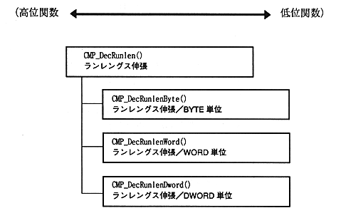

Return to previous page ｜ Return to menu ｜ Go to next page
[Module configuration]
- The decompression library function has a hierarchical module structure in terms of functionality. The high-level functions are easy to use because they are decompressed by interpreting the compression algorithm and parameters, but have the disadvantage of being linked with extra object code.
∙ If you want to link only the minimum necessary object code, you can use a low-level function. In this case, be careful not to make any difference from the operation on the compression tool side.
The following figure shows the extension library module configuration.

Figure 1.5 Module configuration
Return to previous page ｜ Return to menu ｜ Go to next page